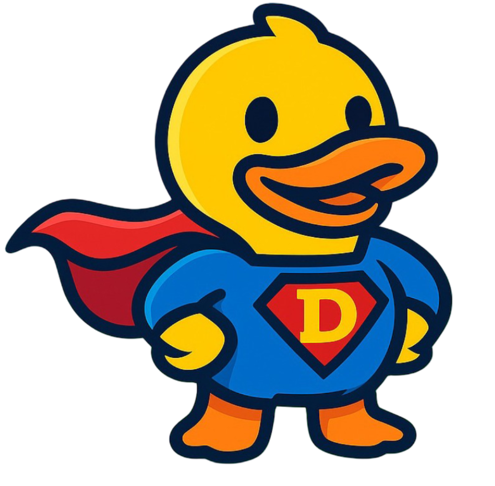

המיזם החינוכי שלי
DuckMe
מורה, תלמיד ועוזר AI — לומדים יחד.
DuckMe הוא מיזם שאני מפתח עם אמתי דרומר, מתוך העבודה שלנו כמורים והרצון לתת לתלמידים ליווי שמתאים להם גם בין השיעורים.
הרעיון הוא לחבר את התלמיד והמורה בשיחה משותפת עם עוזר AI, שמכוון לפי חומרי הלימוד של המורה. לעזור לתלמיד להבין, לשאול ולנסות בעצמו, ולמורה להכיר טוב יותר את דרך הלמידה שלו.

איך נולד הרעיון?
אמתי הראה לי מערכת שהתחיל לפתח, והתחברתי לחזון. משם התחלנו לעבוד יחד על הדרך שבה טכנולוגיה יכולה לתמוך בקשר האישי שבין מורה לתלמיד.
הפיתוח מתחבר לעשייה שלי בבית הספר: למידה מותאמת אישית, חיזוק המוטיבציה ומתן כלים להתקדמות עצמאית.
מה אנחנו רוצים לאפשר?
הכוונה בדרך לפתרון
רמזים והסברים שמבוססים על החומרים של המורה, ועוזרים לתלמיד לעשות את הצעד הבא.
שיחה משותפת
התלמיד, המורה והעוזר הלימודי באותו מרחב, עם מקום לשאלות ולהכוונה אישית.
משימות ומעקב
ריכוז חומרי לימוד ומשימות, והבנה טובה יותר של מה מצליח ואיפה עדיין צריך עזרה.
רוצים לשמוע על DuckMe?
אשמח לספר על המיזם ועל האפשרויות להתנסות. פרטי ההתנסות מתואמים איתי באופן אישי.
נדבר על DuckMe ↗לתיאום שיעורי מתמטיקה ולמחירים המעודכנים: עמוד השיעורים.